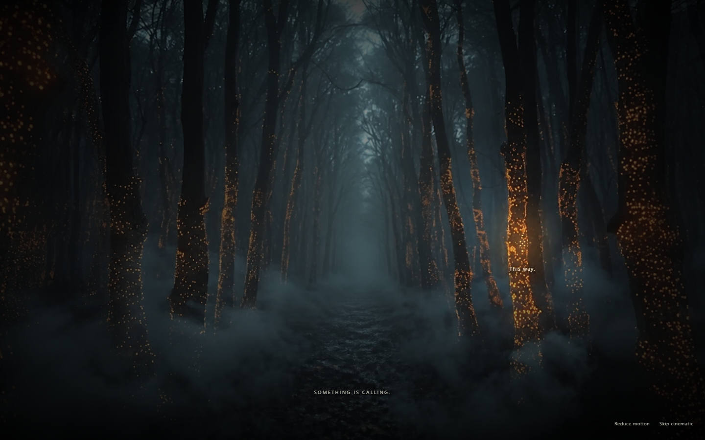
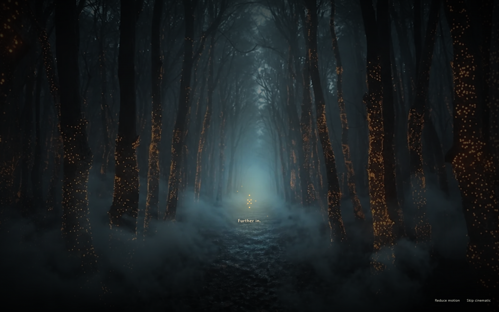
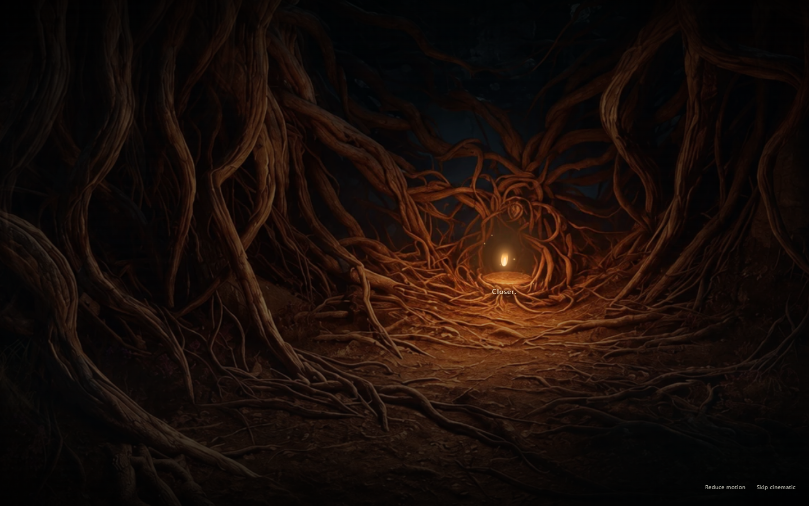
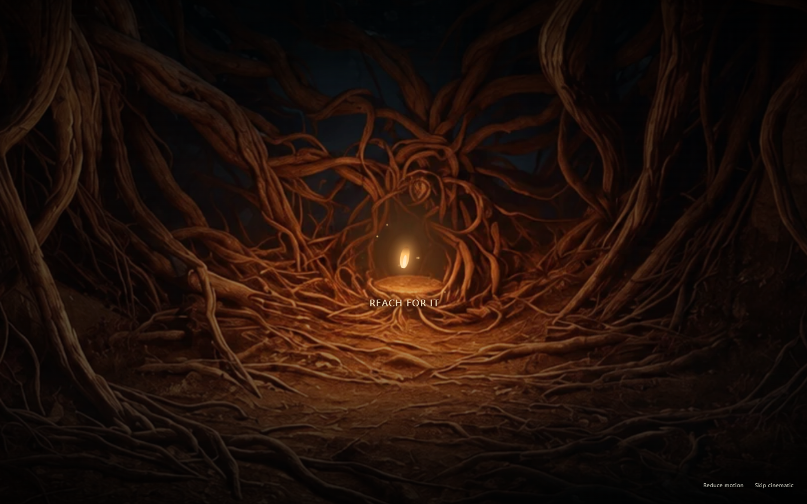
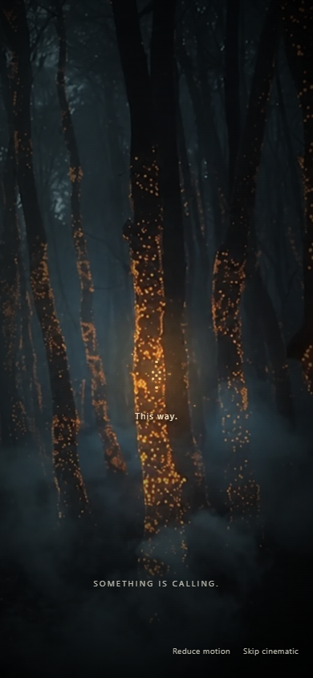
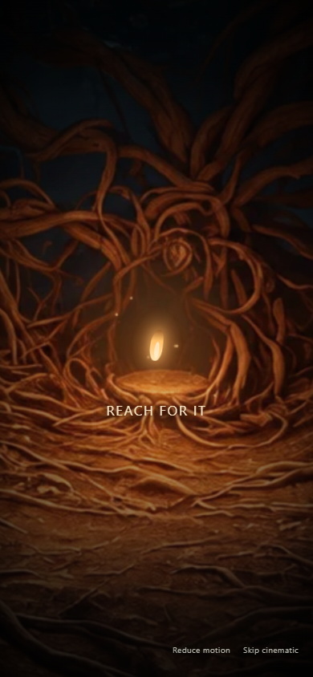

Forest → root chamber → Ember interaction → black.
Play the local build · Implementation and measurement notes
Silent 1440×900 browser recording, encoded at 25 FPS. Ends before inner awakening.






| Stage | Desktop | Mobile emulation |
|---|---|---|
| Forest | 60.0 FPS | 60.0 FPS |
| Guided forest | 59.8 FPS | 55.0 FPS |
| Chamber | 57.8 FPS | 57.7 FPS |
| Ember close | 60.0 FPS | 58.5 FPS |
| Surge | 52.6 FPS | 54.2 FPS |
Production Chrome requestAnimationFrame samples; desktop DPR 1, mobile emulation DPR 2 with 4× CPU slowdown. Not physical-device or GPU-presented FPS certification. The surge falls below the strict desktop 60 FPS target.
First-load JS: 130 kB (+40.6 kB). Two WebP textures: 364,294 bytes total (92.1% smaller than source PNGs). No added dependencies.
Five tested viewport widths: 320, 375, 390, 768 and 1440. Hotspots remain visible and touch-sized. Keyboard/reduced-motion traversal, skip and replay passed. No recorded runtime exceptions or progression writes.
Raw performance results · Flow verification · Production capture checks
{kind=link}
{kind=link}
{kind=link}
{kind=link}
{kind=link}
{kind=link}